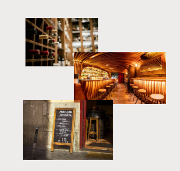

Sobre nosotros
La Bodega de José: Sabor y Tradición en Cada Plato
En pleno corazón de España, te abrimos las puertas a un lugar donde la gastronomía española se vive con pasión. Tapas recién preparadas, recetas clásicas y productos de calidad se unen para ofrecerte una experiencia única, llena de autenticidad y buen gusto.
Acompaña tu comida con un vino selecto, una caña perfectamente servida o un café con aroma inconfundible mientras compartes charlas y risas en un entorno cercano y acogedor. Ya sea para un picoteo rápido, una comida en familia o una cena especial, siempre te recibirá la calidez que nos distingue.
Descubre en La Bodega de José el placer de la buena mesa y el ambiente que convierte cada visita en un recuerdo inolvidable.
